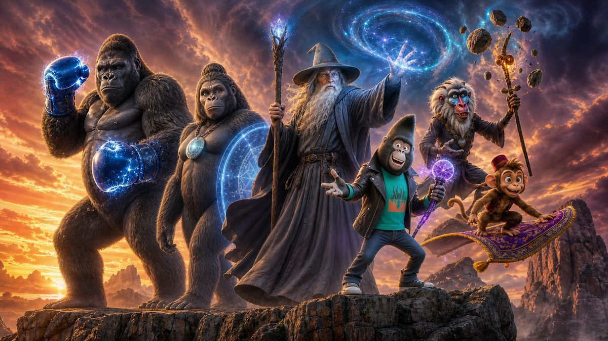

hoje tem históriaEscolhe uma, senta aqui e fecha os olhos.
0
histórias no acervo
0
leituras feitas
0
minutos ouvidos
0
noites seguidas
▶️ Continuar ouvindo
História da noite
Atalhos
Ouvidas recentemente
A IA lê um trecho da história escolhida e imita o jeito de contar: ritmo, humor, tamanho das frases. O enredo continua novo.
Dica: você pode colocar efeitos sonoros no meio do texto escrevendo, por exemplo, [som:chuva] numa linha. Toque no botão abaixo para ver a lista.
🌐 Idioma e aparência
IdiomaPortuguês ou inglês, em todo o app.
Tema claroFundo claro para o dia. O escuro é o padrão, feito para a hora de dormir.
Reduzir animaçõesPara o balanço do AssistONE e as transições do app.
👧 Para quem são as histórias
Serve para o site cumprimentar do jeito certo e para a IA escrever falando com quem vai ouvir. Deixando em branco, nada disso aparece.
Cumprimentar pelo nome na históriaA IA começa a história com uma saudação curta dirigida a quem vai ouvir.
Falar o cumprimento antes da históriaAntes de começar a leitura, a voz diz o cumprimento abaixo.
🛡️ Não mandar os nomes para a IAAntes de pedir uma história, os nomes viram códigos ([NOME1], [NOME2]…) e voltam ao normal aqui no aparelho. A IA nunca recebe os nomes das crianças.
A voz de internet (Gemini, ElevenLabs, OpenAI ou a voz premium da SolverONE) precisa receber o texto para ler — inclusive os nomes. Para nada sair do aparelho, use a voz do celular.
No topo da tela: —
Em voz alta: “—”
Em voz alta: “—”
🔊 Voz que lê as histórias
procurando vozes…
Voz grátis e instantânea: no computador, abra pelo Microsoft Edge — ele traz vozes brasileiras naturais (Francisca, Thalita, Antonio, marcadas com ⭐), sem chave e sem espera.
No Android, o caminho é instalar um mecanismo melhor (SherpaTTS, gratuito e offline) e escolhê-lo como padrão nas Configurações — toque em ❓ acima para o passo a passo.
⭐ = voz que parece natural. ✅ = em português. A opção Padrão do aparelho usa o mecanismo que estiver escolhido nas Configurações do celular, seja ele qual for.
A ElevenLabs tem a voz mais natural que existe hoje, com entonação de verdade. Crie uma conta em elevenlabs.io, vá em Profile → API Key e cole a chave aqui. Ela fica salva só neste celular, nunca vai para o GitHub.
Voz natural de verdade, com entonação, e de graça na cota do Google. Use a mesma chave da seção "IA que escreve as histórias" — uma chave só faz tudo. Pegue em aistudio.google.com/apikey.
Isso é uma instrução em português mesmo. Dá para pedir coisas como “sussurre nas partes de suspense” ou “faça vozes diferentes para cada personagem”.
Crie uma conta em platform.openai.com, adicione créditos e gere a chave em API keys. Ela fica salva só neste celular.
🎵 Efeitos sonoros
Efeitos durante a leituraChuva, vento, fogueira, trovão... criados pelo próprio site, sem baixar nada.
Chuva, vento, mar, floresta, fogueira e noite tocam junto com a leitura e depois somem devagar, sem corte seco. Trovão, magia, sino, passos e coração são rápidos e não mudam.
✨ IA que escreve as histórias
O Google dá uma cota gratuita por dia. Entre em aistudio.google.com/apikey, faça login com sua conta Google e clique em Create API key.
O Google troca os modelos de tempos em tempos. Se aparecer erro dizendo que o modelo saiu de linha, toque no botão acima e escolha um da lista.
Crie a chave em console.anthropic.com → API Keys. É pago por uso (cada história custa centavos).
Usa a mesma chave da OpenAI da seção de voz.
Nenhuma chave necessária. A aba “Criar” vai abrir direto no modo Eu escrevo, e o site funciona 100% offline.
💾 Histórias e cópia de segurança
Trazer as histórias que vêm com o appAo abrir, buscar as histórias novas do acervo do app.
A cópia sai protegida por uma senha sua e por um código para anotar num papel. Para trazer de volta, aqui ou em outro aparelho, use Trazer uma cópia: nada se repete.
⚡ Voz guardada no aparelho
Cada trecho de voz gerado fica guardado neste aparelho. Repetir uma história, voltar um trecho ou ouvir de novo amanhã não gasta a cota outra vez — o site usa o áudio guardado. E funciona sem internet.
Preparar a história inteira ao abrirEnquanto vocês escolhem, o site já vai gerando os próximos trechos.
Com a voz do celular, usar a voz guardadaSe a história já tem voz de internet inteira no aparelho, toca com ela — sem gastar cota e sem internet. Trocar para a voz do celular não apaga nada.
📥 Fila de vozBaixa a voz de várias histórias, uma por vez, e tenta de novo sozinha quando a cota acaba.
calculando…
🎤 Comandos de voz (experimental)
Mostrar o botão 🎤Toque no 🎤 e fale um comando. O microfone só abre com o toque. No Chrome, o que é falado vai ao Google para virar texto.
O que dá para falar:
Entender frases livres com a IAQuando nenhum comando fixo servir, a IA que escreve as histórias tenta entender o pedido (ex.: "quero aquela do dragão"). Gasta um pouquinho da cota.
💛 AssistONE
AssistONE ativadoO ajudante do canto: ajuda da tela, tour rápido e busca.
📖 Leitura
Manter a tela acesaEnquanto a história estiver tocando.
Destacar a frase sendo lidaAjuda quem já está aprendendo a ler.
✨ Conta SolverONE
☁️ Minhas histórias na conta
⚠️ Zona de perigo
ℹ️ Sobre
UM Contador de Histórias
versão — · —
Projeto pessoal, sem fins comerciais.
Feito com carinho para as meninas 💜
Feito com carinho para as meninas 💜